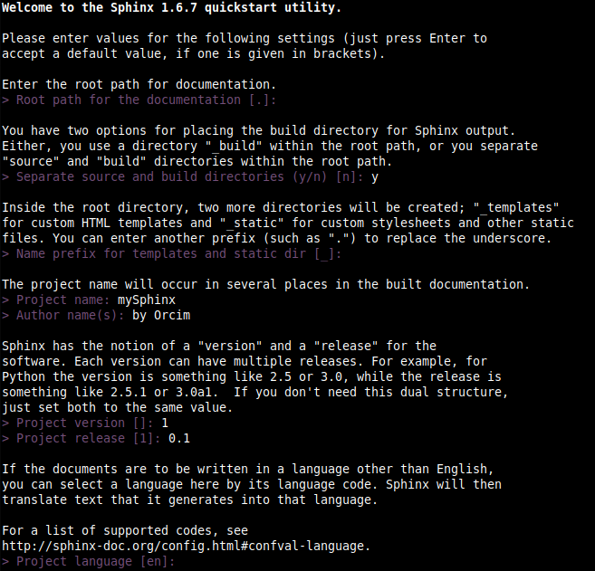
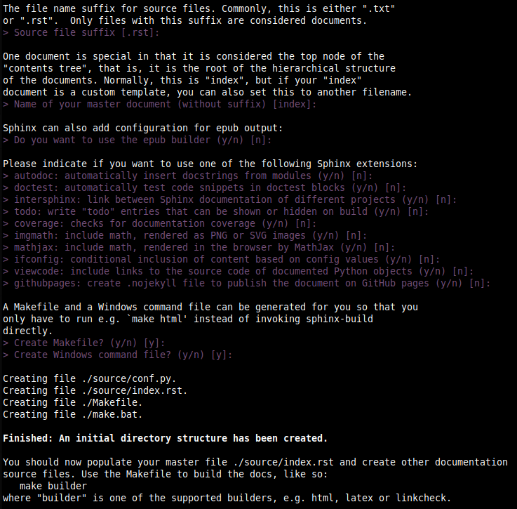

04-Sphinx¶
Install¶
Per installare l’applicazione:
$ pip3 install Sphinx
Latex¶
https://www.sphinx-doc.org/en/master/usage/builders/index.html#sphinx.builders.latex.LaTeXBuilder
https://sudonull.com/post/70830-How-to-make-LaTeX-and-PDF-generation-in-Sphinx
Per installare Latex:
$ sudo apt install texlive-latex-recommended texlive-fonts-recommended texlive-latex-extra latexmk
Per creare un documentazione Latex:
$ make latex
$ make latexpdf
Rinohtype¶
Per installare Rinohtype:
$ pip3 install rinohtype
Aggiungere nel file di configurazione conf.py:
rinoh_documents = [('index', # top-level file (index.rst)
'index', # output (index.pdf)
'Document Title', # document title
'Loris Michielutti')] # document author
Per creare un documentazione Rinohtype:
$ sphinx-build -b rinoh source build/rinoh
Work¶
Per creare un progetto esempio:
$ mkdir prj01 && cd prj01
Quickstart¶
Per creare la struttura iniziale della documentazione:
$ sphinx-quickstart
Rispondere alle domande per creare la struttura del progetto.
Esempio: campi modificati…
sorgenti esterni alla build: y
nome progetto: mySphinx
nome autore: by Orcim
versione: 1
rilascio: 0.1
lingua: en
Gli altri campi sono solo confermati.
 Questo processo crea una struuttura del tipo:
.
├── build
├── make.bat
├── Makefile
└── source
├── conf.py
├── index.rst
├── _static
└── _templates
I files che regolano il nostro progetto sono:
conf.py
index.rst
conf.py¶
Questo file contiene la configurazione del nostro progetto.
Modifichiamo i vari elementi…
project = 'myNotes'
aggiungiamo alla fine del file le nostre regole:
# lmi-20210613 ---------------------------------------------------------------
html_show_sourcelink = False
html_theme_options = {
# 'show_relbars' : 'true',
# 'show_relbar_top': 'true',
# 'show_relbar_bottom': 'true',
'show_related' : 'true',
'show_powered_by' : 'false',
}
extensions = [
'sphinx.ext.githubpages',
# 'sphinx.ext.intersphinx',
]
index.rst¶
Questo file contiene l’indice strutturato del nostro progetto.
Warning
Attenzione che index.rst usa l’identazione con spazio=3
Per aggiungere un documento alla nostra struttura
bisogna inserire nel toctree il percorso del nostro file da aggiungere.
Esempio l’ultimo documento inserito 04-Sphinx.rst
.. toctree::
:maxdepth: 2
:caption: Contents:
01-Init.rst
02-Operations.rst
03-Docs.rst
04-Sphinx.rst
Per avere la nostra firma nella pagina pricipale
inserire prima del toctree il seguente codice:
.. sidebar:: by Orcim
:now: |today|
.. toctree::
Themes¶
Per cambiare il tema si deve impostare nel file conf.py
l’attributo html_theme. Esempio:
html_theme = 'furo'
Alcuni temi devono essere installati. Come nel nostro esempio:
$ pip3 install furo
Bisogna commentare la seguente sezione che va in conflitto con questo tema:
# html_theme_options = {
# 'show_related' : 'true',
# 'show_powered_by' : 'false',
# }
Ricompilare:
$ make clean
$ make html
Build¶
Per partire con una situazione pulita:
$ make clean
Per costruire il documento:
$ make html
Nel nostro caso che abbiamo modificati il Makefile:
$ make github
Cresto oltre che costruire il documento html
copia anche i relativi file all’interno del nostro repository locale
View¶
Per facilitare il controllo del risultato
si puo’ creare un link del file index.html
nella directory dove si trova il Makefile:
$ ln -s build/html/index.html
Per comodita’ creo un link anche sul file index.rst:
$ ln -s source/index.rst